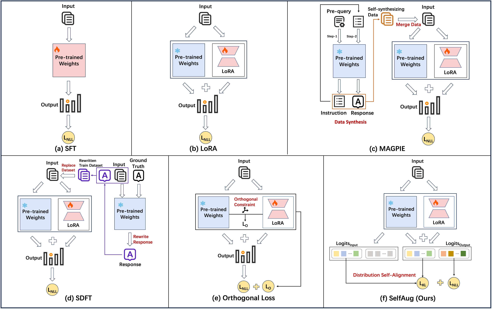

Official code for "SelfAug: Mitigating Catastrophic Forgetting in Retrieval-Augmented Generation via Distribution Self-Alignment".
SelfAug mitigates catastrophic forgetting during RAG fine-tuning by aligning input-sequence logits with the original model distribution. It preserves general capability while learning downstream RAG responses, without replay data or expensive response-generation pipelines.
1. Paper
Yuqing Huang, Rongyang Zhang, Qimeng Wang, Chengqiang Lu, Yan Gao, Yi Wu, Yao Hu, Xuyang Zhi, Guiquan Liu, Xin Li, Hao Wang, and Enhong Chen. SelfAug: Mitigating Catastrophic Forgetting in Retrieval-Augmented Generation via Distribution Self-Alignment. Findings of EMNLP 2025, 2025.
Paper / PDF / Project Page / Code / Citation
The paper connects distribution shift with catastrophic forgetting in RAG fine-tuning. SelfAug adds a KL-divergence alignment term over input sequence logits so task learning and original-distribution preservation can be optimized together.
2. Highlights
- Preserves the original model distribution during RAG fine-tuning.
- Requires no extra replay data and no response-generation validation loop.
- Adds a self-distribution alignment loss alongside the downstream negative log-likelihood loss.
- Provides focused Qwen2/LoRA integration files for quick experimentation.
3. Method At A Glance

SelfAug combines task learning with input-logit distribution alignment. The KL term encourages the fine-tuned model to remain close to the base model on the input sequence while still learning the target response.
4. Repository Structure
.
|-- Code/
| |-- update_module.py # Copy patched files to package locations
| |-- modeling_qwen2.py # Qwen2 modeling file to replace in transformers
| `-- layer.py # LoRA layer file to replace in peft
|-- Figures/ # Original method figure
`-- docs/ # Project page and README assets5. Installation
Use an environment compatible with your transformers, peft, and Qwen2 fine-tuning stack. Back up the target package files before replacing them.
6. Data / Models
SelfAug is applied during LoRA fine-tuning. Prepare the downstream RAG fine-tuning data and the base Qwen2-compatible model according to your existing training pipeline.
7. Quick Start
Ensure modeling_qwen2.py and layer.py are present under Code/, then run:
cd Code
python update_module.pyAfter patching the local packages, proceed with LoRA fine-tuning using the normal transformers and peft workflow.
8. Reproducing Results / Evaluation
Use the patched model and LoRA layer in your fine-tuning script, with the SelfAug loss balancing downstream negative log-likelihood and input-logit KL divergence. Compare downstream RAG task metrics and general capability retention.
9. Configuration Notes
The main experimental control is the weight between task loss and self-distribution alignment loss. Keep the package versions and patched file paths fixed when reproducing reported results.
10. Experimental Highlights
SelfAug is designed to improve the balance between RAG specialization and general knowledge retention. The paper reports that preserving input-sequence distribution helps reduce catastrophic forgetting across fine-tuning scenarios.
| Setting | LoRA IFEval | SelfAug IFEval | Gain |
|---|---|---|---|
| 2K-token context | 58.23 | 63.03 | +4.80 |
| 4K-token context | 56.19 | 62.48 | +6.29 |
| 6K-token context | 52.87 | 55.82 | +2.95 |
| 8K-token context | 50.28 | 57.67 | +7.39 |
Across model sizes, SelfAug improves IFEval after LoRA fine-tuning by +8.32 for 3B, +13.31 for 7B, +21.63 for 14B, +14.79 for 32B, and +9.98 for 72B.
Conclusion: the method preserves instruction-following ability while adapting to RAG tasks, and the effect is visible across context lengths and model scales.
11. Notes For Maintainers
- Keep patched package files synchronized with the target
transformersandpeftversions. - Store new README/project-page figures under
docs/assets/. - Add ACL Anthology, slides, poster, or video links when official presentation materials become public.
12. Citation
@misc{huang2025selfaug,
title = {SelfAug: Mitigating Catastrophic Forgetting in Retrieval-Augmented Generation via Distribution Self-Alignment},
author = {Huang, Yuqing and Zhang, Rongyang and Wang, Qimeng and Lu, Chengqiang and Gao, Yan and Wu, Yi and Hu, Yao and Zhi, Xuyang and Liu, Guiquan and Li, Xin and Wang, Hao and Chen, Enhong},
year = {2025},
eprint = {2509.03934},
archivePrefix = {arXiv},
primaryClass = {cs.CL},
url = {https://arxiv.org/abs/2509.03934}
}13. Contact
For paper questions, please contact:
- First author: Yuqing Huang (
huangyuq@mail.ustc.edu.cn) - Corresponding authors: Guiquan Liu (
gqliu@ustc.edu.cn), Hao Wang (wanghao3@ustc.edu.cn), and Enhong Chen (cheneh@ustc.edu.cn)
For repository issues, please open a GitHub issue in this repository.